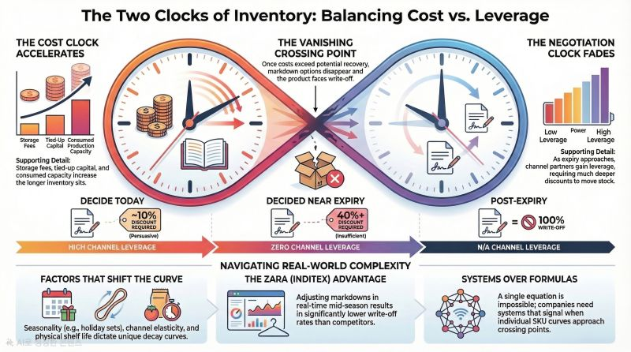
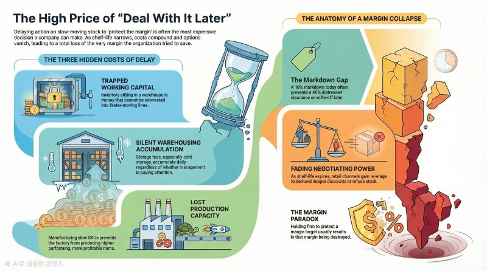
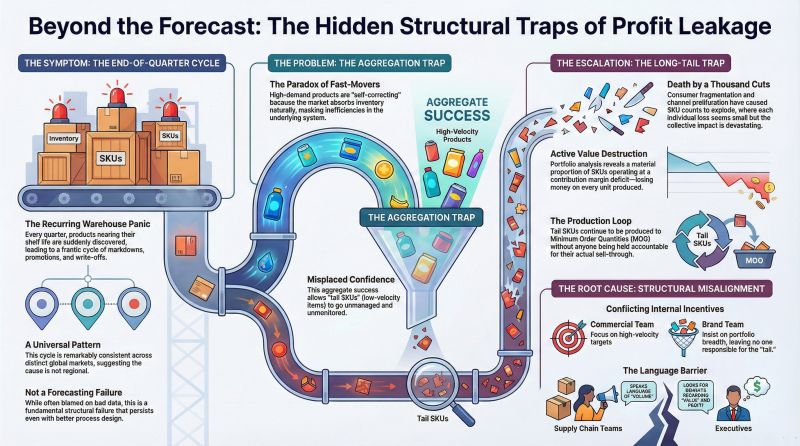

About Us
We design independent SCM data analytics platforms and simulation environments to establish supply chain governance and optimize execution timing.
The core challenge in modern SCM is not a lack of data or profit metrics, but establishing proper governance and securing the right timing for execution. We demonstrate the necessity of a specialized, independent SCM Analytics Platform. Our approach focuses on explaining existing operational facts to support clear decision-making, rather than attempting to replace existing operational systems (ERP/SCP) or SAP BW.
Core Solutions

SCM Data Platform Architecture
- Designing and implementing Snowflake-based cloud data warehouses.
- Establishing cost-effective master data management systems, avoiding impractical and costly real-time synchronization.

S&OP / S&OE Simulation
- Building simulation environments where the mid-term plan is utilized strictly as a high-level reference.
- Resolving short-term execution and supply chain timing issues, assuming stable access to raw materials maintained by safety stock.

Financial SCM & Throughput Analytics
- Linking supply chain financial metrics based on Throughput Accounting.
- Analyzing inventory efficiency and flow management centered on Stock Holding Days (SHD).
Latest Insights

The Two Clocks of Inventory: Balancing Cost vs. Leverage
Inventory management involves two simultaneous, opposing metrics: the cost curve and the negotiation leverage curve. Understanding this intersection is critical before options vanish.
Read Full Article
The High Price of "Deal With It Later"
Delaying action on slow-moving inventory is consistently the most expensive decision an organization can make, leading to total margin collapse.
Read Full Article
Beyond the "Unprofitable" Label: The 3 Layers of SKU Loss
Classifying all loss-making SKUs under a single label prevents targeted resolution. Effective remediation requires distinguishing between three specific layers of loss.
Read Full Article
Beyond the Forecast: The Hidden Structural Traps
The recurring end-of-quarter cycle of expiring shelf life and markdowns is frequently attributed to poor forecasting, but data reveals a structural failure.
Read Full Article